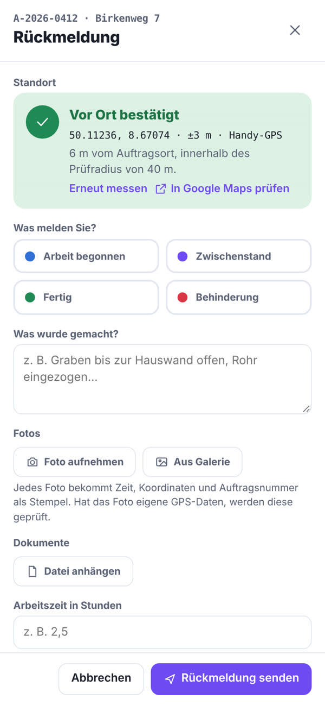
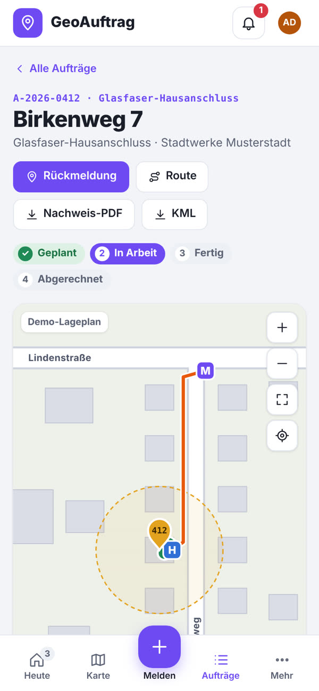

Demos
Demos zum Ausprobieren
Eine App-Suite für Workflow und Reklamationen, eine Arbeitsschutz-App, ein Auftragstool mit GPS-Nachweis, ein Management-Cockpit und eine Website zeigen, was wir für kleine und mittlere Unternehmen bauen. Jede Demo läuft mit Beispieldaten direkt im Browser. Ihre Eingaben bleiben nur in Ihrem Browser gespeichert.
Alle Demos
Wählen Sie eine Anwendung

Workflow und Reklamationen in einer App
Workflow Management, Kundenreklamationen und Lieferantenreklamationen in einer App, mit gemeinsamen Stammdaten, Aufgaben und Excel-Massenupload. Links in der Navigation wechseln Sie zwischen den Bereichen.
App öffnen
Workflow Management
Anträge, Freigaben und Dokumente laufen digital durch die Abteilungen, mit Freigabekette, Erinnerungen und Eskalation.
- Einen Workflow freigeben oder zurückweisen
- Einen neuen Workflow mit Freigabekette anlegen
- Offene Aufgaben je Person ansehen

Kundenreklamationen (8D)
Reklamationen von Kunden strukturiert nach 8D, mit Rollen, Fristen, Kosten und Eskalation bis zum fertigen 8D-Bericht.
- Eine neue Kundenreklamation anlegen
- Die 8D-Schritte abarbeiten
- Zwischen Board, Liste und Feed wechseln

Lieferantenreklamationen
Mängel an Zukaufteilen mit dem Lieferanten klären: 8D-Schritte, Fristen, Kosten und Eskalation, alles nachvollziehbar an einem Ort.
- Eine Lieferantenreklamation anlegen
- Den 8D-Bericht ansehen
- Die Rolle wechseln, etwa zur QM-Leitung

Arbeitsschutz-App
Wer braucht welche Unterweisung, was ist überfällig? Online-Unterweisung mit Quiz und Unterschrift, Audits mit Checklisten und eine Mappe mit allen Nachweisen für die Behörde.
Das können Sie ausprobieren
- Die Unterweisungsmatrix öffnen
- Eine Online-Unterweisung mit Quiz durchspielen
- Die Behördenmappe als PDF erstellen

GeoAuftrag: Feldaufträge mit GPS-Nachweis
Monteure melden vom Handy mit automatischem Standort, Fotostempel und Materialverbrauch. Das Büro sieht, wer wo was gemacht hat. Der Auftraggeber überwacht alle Baustellen aller Auftragnehmer und bestätigt das gebuchte Material.
Das können Sie ausprobieren
- Auf dem Handy eine Rückmeldung senden
- Einen falschen Standort simulieren und unter „Prüfen“ ansehen
- Eine Trasse auf der Karte aufnehmen
- Als Auftraggeber alle Baustellen und den Materialverbrauch ansehen

Geschäftsführungs-Cockpit
Vertrieb, Produktion, Qualität, Einkauf und Finanzen auf einen Blick. Mit Drill-down, Filtern, gespeicherten Ansichten und Excel-Upload für eigene Zahlen.
Das können Sie ausprobieren
- Eine Kennzahl anklicken und ins Detail gehen
- Nach Werk und Region filtern
- Eine eigene Excel-Datei hochladen

Website für eine Spedition
Beispiel-Website der fiktiven Nordline Logistik in eigenem Design: Frachtrechner mit Lademetern, Sendungsverfolgung, Abfahrtstafel und Liniennetz. Läuft auf Desktop und Handy.
Das können Sie ausprobieren
- Lademeter und Richtpreis im Frachtrechner berechnen
- Eine Beispielsendung verfolgen
Alle Demos laufen auch auf dem Handy. GeoAuftrag nutzt dort echtes GPS, wenn Sie die Standortfreigabe erlauben.
GeoAuftrag auf dem Handy
So melden Monteure vom Einsatzort
Die Mitarbeiter-Ansicht läuft im Browser auf jedem Handy, ohne App-Store. Probieren Sie sie direkt hier aus: Sie sind als Monteur Ahmet Demir angemeldet.



Auftrag öffnen
Unter „Heute“ stehen die Aufträge des Tages mit Adresse, Frist und Route zu Google Maps.
Vor Ort melden
Ein Tipp auf „Vor Ort melden“ misst den Standort per GPS und prüft, ob er im Prüfradius der Baustelle liegt.
Fotos und Arbeitszeit
Fotos bekommen Zeit, Koordinaten und Auftragsnummer als Stempel. Dazu Arbeitszeit und wer vor Ort war.
Trasse einzeichnen
Kabelwege und Markierungen direkt im Lageplan ablaufen oder setzen. Das Büro sieht alles sofort und rechnet ab.
Material buchen
Verbrauchtes Material wie 10 t Sand oder 100 m Kupferkabel direkt mit der Rückmeldung buchen. Der Auftraggeber sieht Soll und Ist je Baustelle und bestätigt die Mengen.
Erzählen Sie uns, was Sie Zeit kostet
Im kostenlosen Erstgespräch finden wir heraus, wo sich Automatisierung oder eigene Software für Sie lohnt.
Erstgespräch anfragen